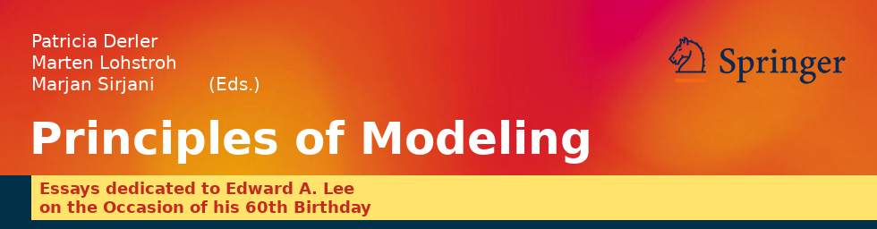

The following authors will be contributing an article to the Festschrift:
- Gul Agha
- Ilkay Altintas
- Rajeev Alur
- Gerard Berry
- Sanjoy Baruah
- Shuvra Bhattacharyya
- David Broman
- Giorgio Buttazzo
- Janette Cardoso
- Werner Damm
- Patricia Derler
- Prabal Dutta
- Stephen Edwards
- John Eidson
- Jean-Luc Gaudiot
- Marc Geilen
- Alain Girault
- Soonhoi Ha
- Reinhard von Hanxleden
- Tom Henzinger
- Christoph Kirsch
- Hermann Kopetz
- Jie Liu
- Bertram Ludäsher
- Dave Messerschmitt
- Marco di Natale
- George Pappas
- Jan Rabaey
- Bernard Rumpe
- Sanjit Seshia
- Alberto Sangiovanni-Vincentelli
- Bruno Sinopoli
- Marjan Sirjani
- Jonathan Sprinkle
- Janos Sztipanovits
- Walid Taha
- Martin Törngren
- Stavros Tripakis
- Hans Vangheluwe
- Michael Wetter
- Reinhard Wilhelm
Not all authors will be able to present during the symposium, but their articles will be made available during the event. Springer will publish the articles in a special "Festschrift" LNCS post-proceedings.